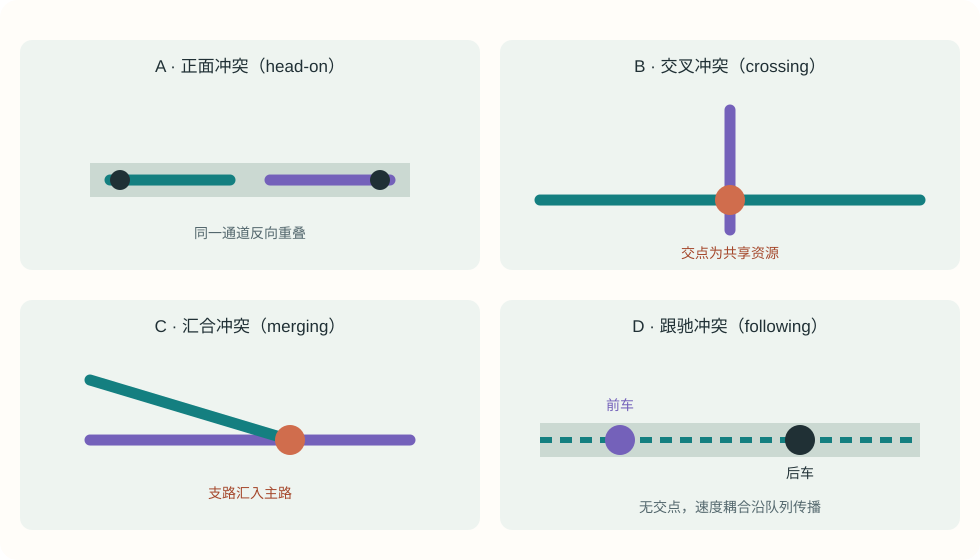
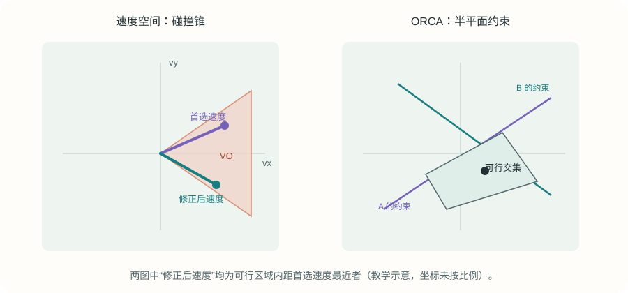
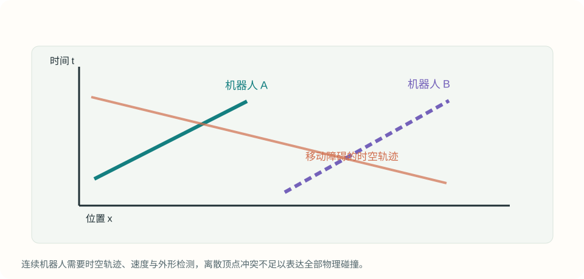

多机器人协调：为什么“各自最优”会一起卡死？
多台机器人共享同一空间时，一批“各自最短”的路径可能整体不可执行：路口死锁、通道活锁、跟驰连锁。本章从联合状态空间与冲突类型出发，讲清优先级规划、交通规则与速度障碍（VO/RVO/ORCA）的取舍，并给出可验证的冲突检测。
个体最优不等于系统最优
前面各章的主角都是单台机器人。但仓库里可能有成百上千台搬运机器人，港口里多台 AGV 同时作业。当多台共享同一空间时，分别给每台算出“最短路径”并不意味着它们能同时执行。
一个典型反例：两台机器人分别从左右两翼驶向一个十字路口，各自的最短路径都在路口中心相交。单看任一条路径都可行；两条一起执行时，如果时机重叠，就会在交点相撞。更麻烦的是死锁（deadlock）：多台机器人互相占据对方的必经之路，谁都前进不了（例如环形路口上四台车各自等右侧空闲）。比死锁更隐蔽的是活锁（livelock）：机器人都在动，都在谦让，却始终无人前进。
多机器人协调的难点不在“单条路径好不好”，而在把一组路径同时变得可执行。多个体最优的简单相加，不等于系统可行，更不等于系统最优。
联合状态空间与冲突类型
多机器人系统的“状态”是所有机器人的状态拼接。若单机器人状态空间大小为 |X|、共 k 台，则联合状态空间为：
以 104 个位置的栅格为例，两台就是 108，三台是 1012。直接在这个联合空间上搜索（即联合状态空间规划）其完备性与最优性最好，但只能用于机器人极少的情形。
把冲突分类有助于选择方法。常见四类：
- 正面冲突（head-on）——同一通道相向而行；
- 交叉冲突（crossing）——不同方向驶向同一路口；
- 汇合冲突（merging）——从支路汇入主路；
- 跟驰冲突（following）——同向前后跟随，前车减速可能引发连锁。
MULTI-ROBOT · 21

分类之外还要看判定方式。如果只在离散时间片上检查“同一个顶点有没有被两台机器人同时占据”，就会漏掉边交换冲突：两台机器人在相邻时刻相向穿过同一条边，任何单个时间片上都没有同格占用，却真实地发生了对撞。
MULTI-ROBOT · 21

冲突检测有两种思路：基于路径（在规划阶段检查路径的时空重叠）与基于感知（运行中实时避免）。前者精度高但需全局信息，后者实时但目光短浅。工程中常常两层同时使用。
优先级规划
最简单的工程方法是优先级规划（prioritized planning）：给机器人排一个顺序，按优先级从高到低依次规划，高优先级已规划的路径被当作“动态障碍”留给低优先级避开。
- 为每台机器人分配优先级；
- 按优先级从高到低依次调用单机器人规划（第 6–13 章任一方法）；
- 把已确定的路径加入障碍表示，不再修改；
- 低优先级规划失败时，可重排优先级再试，或降低其任务精度。
好处是 n 台机器人被分解成 n 个单机器人问题，计算量远低于联合搜索。代价是质量不公平且不保证可行：低优先级的路径可能很长，甚至在给定障碍下无解——即使实际上存在一组可行路径。也就是说，对固定的优先级顺序它不完备；只有允许枚举/重排优先级时才有可能完备。
优先级的分配常见三种：静态（按任务重要度固定）、随机（每次重排以避免系统性偏差）、动态（根据实时状态计算，如“先到冲突区者优先”）。
| 方法 | 通信需求 | 计算方式 | 主要局限 |
|---|---|---|---|
| 优先级规划 | 低（需优先级） | 集中式顺序规划 | 固定顺序不完备，低优先级质量差 |
| 交通规则 | 低（局部感知） | 去中心化 | 依赖规则覆盖，非结构化环境难适用 |
| VO / RVO / ORCA | 中（交换状态） | 去中心化 | 只顾避碰，不保证到达目标 |
| 联合状态空间 | 极高（全信息） | 集中式联合搜索 | 状态空间指数增长，仅适用于少量机器人 |
交通规则与车道
把人类社会成熟的交通规则搬到机器人世界，几乎不需要全局通信：
- 虚拟交通灯——在路口用令牌或协商机制发通行权，绿灯过、红灯等；
- 让行规则——如“右侧来车优先”“直行优先于转弯”，所有机器人遵循同一套规则；
- 车道化——把地面划分为方向固定的车道，强制机器人单向行驶。部分仓库的搬运机器人就采用类似思路：在地面标志上沿固定方向行进，不允许逆行。
优点是去中心化、可扩展；缺点是规则的完备性有限——非结构化环境里，“转弯让直行”这类规则可能根本用不上，而且规则之间可能互相冲突。
车道化与交通规则本质上是用结构换复杂度：人为限制可行运动的自由度，换取可预测、可验证的交互。代价是牺牲了灵活性与部分最优性。
速度障碍：VO / RVO / ORCA
当机器人多到无法集中规划时，可选基于局部观测与状态交换的去中心化避碰。速度障碍（velocity obstacle）家族只用“位置 + 速度”就能工作：
- VO——对机器人
A与障碍B，把会导致未来碰撞的相对速度集合画成一个锥。将锥平移后，只要 A 的相对速度落在锥外，就不会与 B 相撞。 - RVO——若 A 与 B 都用 VO 避让，会互相镜像抖动。RVO 假设双方各承担一半避让责任，消除了振荡。
- ORCA——为每个邻居生成一个半平面约束（速度空间），只要 A、B 各自选一个落在各自半平面内的速度，就能保证一段时间内互不碰撞；在满足约束的速度中选与首选速度偏差最小的那个。van den Berg 等人（2011）给出了该充要条件的构造。
MULTI-ROBOT · 21

速度障碍只保证避碰，不保证到达目标。它也可能被大量机器人挤入停滞（同质群体在原地互相避让）。通常要叠加一个更上层的任务调度或优先级，避免循环避让。
交互：四种冲突
点选一种冲突类型，看它在几何上长什么样。前三种是路径相交，第四种（跟驰）没有交点，冲突来自速度耦合。
正面冲突：两台机器人在同一通道相向而行，路径正好反向重叠。
示意图，非真实尺寸；颜色与线型同时标记两台机器人，便于非彩色阅读。
可运行的冲突检测（Python 3.10+）
下面用一个函数计算两台匀速机器人在一段时间内的最小间距（负值表示会碰撞）。把直角交叉场景代入：直接通行时间距为 -1.00（碰撞）；让其中一台减速一半后，最小间距变为 1.24（安全）。存成 conflict_demo.py，运行 python3 conflict_demo.py，断言应当通过。
import math # Python 3.10+
def clearance(pa, va, pb, vb, ra, rb):
"""两台匀速机器人在 t>=0 上的最小间距减去半径和；<0 即会碰撞。"""
rx, ry = pa[0] - pb[0], pa[1] - pb[1] # 相对位置
vx, vy = va[0] - vb[0], va[1] - vb[1] # 相对速度
speed2 = vx * vx + vy * vy
if speed2 < 1e-12:
return math.hypot(rx, ry) - (ra + rb)
t = -(rx * vx + ry * vy) / speed2 # 达到最小间距的时刻
if t < 0:
t = 0.0
return math.hypot(rx + vx * t, ry + vy * t) - (ra + rb)
ra = rb = 0.5
c1 = clearance((0, 0), (1, 0), (5, 5), (0, -1), ra, rb)
assert c1 < 0, c1 # 交叉点同时到达：会相撞
c2 = clearance((0, 0), (1, 0), (5, 5), (0, -0.5), ra, rb)
assert c2 > 0, c2 # 让行减速后最小间距为正
print(f"crossing clearance: collision={c1:.2f}, after yielding={c2:.2f}")
本例是确定性教学示意：验证的是单个冲突对的几何判定，而不是完整的多机器人调度。真实系统还需处理多对冲突的联立、优先级与通信延迟。
边界条件
- 联合状态空间是指数级的：精确的联合规划只能用于少量机器人；机器人越多，越需要分层/去中心化的折中。
- 固定优先级不完备：某一优先级顺序下无解，不代表不存在可行的一组路径；需要重排优先级或允许低优先级机器人让位。
- 速度障碍只避碰：VO/RVO/ORCA 保证一段时间不碰撞，不保证到达目标；同质群体可能互相避让而停滞。
- 依赖通信与合规假设：RVO/ORCA 假设双方能交换状态并遵守同一规则；存在传感器噪声、延迟或不合作智能体时保证会减弱。
- 死锁需全局机制：局部规则很难从死锁中恢复，通常需要后退行为、动态优先级或更上层调度；设计时优先选择环路拓扑而非单线瓶颈。
还有一个常被忽略的边界：MAPF 的顶点/边冲突是在离散时间步上定义的。真实机器人是连续物体，两台机器人可能既不共格、也不交换边，却因为外形与速度在某一瞬间发生擦碰。
MULTI-ROBOT · 21

来源与实现参照
- van den Berg, Guy, Lin & Manocha (2011), Reciprocal n-body Collision Avoidance, ISRR——ORCA 的半平面约束与最优互让。
- Fiorini & Shiller (1998), Motion Planning in Dynamic Environments Using Velocity Obstacles, IJRR 17(7)——速度障碍的原始定义。
- LaValle, Planning Algorithms——多机器人、去中心化与优先级（解耦）规划背景。